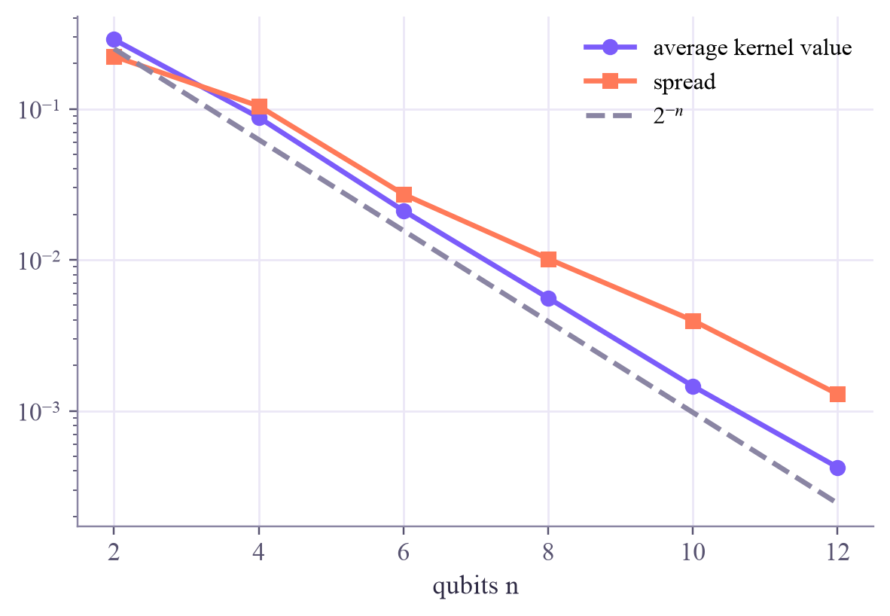

Add qubits and the kernel values of different points collapse towards a tiny constant, about 2⁻ⁿ. See it happen, see why shots make it fatal, and see what the bandwidth can do.
about 12 minqml-w2d4.ipynb
In this lesson you will
Describe exponential concentration: kernel values shrinking towards about 2−n with almost no spread
Explain why it's fatal with shots: values below 1/S read as zero
Use a small bandwidth to fight it, and know what that costs
Warm-up
A kernel that can't see differences
1 min
More qubits means a bigger feature space: surely a better kernel? Run the experiment and the opposite happens. In a huge space almost every pair of states is nearly orthogonal, so every point looks equally unlike every other. It's the kernel version of QC week 7's barren plateaus, and it caught the field by surprise.
Big idea
Concentration, and why it bites
4 min
Two random states of n qubits overlap very little: on average ∣⟨ψ∣φ⟩∣2=2−n. An expressive feature map spreads data points around the state space much like random states, so the kernel values of different points concentrate near a tiny constant, with an even tinier spread:
k(x,x′)≈2−nfor almost every pair x=x′
Why that's fatal. With S shots, a probability below about S1 usually shows up as zero counts. Once kernel values fall below that, the measured matrix is the identity plus noise: every point looks like itself and nothing else, the SVM memorizes, and new points get guesses. Seeing the differences would take about 2n shots per entry, exponentially many. The same thing happens even without shots: the exact matrix is so close to the identity that the SVM can only memorize.
What makes it worse: expressive, deep, highly entangling feature maps; more qubits; and hardware noise, which pushes every state towards the same mixed state.
The bandwidth. Multiply the features by a small s before encoding: the states stay near each other and the values keep a healthy spread. Tuned bandwidths rescue many quantum kernels in practice. The catch: a kernel with a very small bandwidth often behaves almost like a simple classical kernel, so the "quantum" part may not be doing much. Other remedies, such as projected quantum kernels that compare reduced states of single qubits, are active research.
In big feature spaces, different points look equally unlike each other; shrink the bandwidth or the kernel only memorizes, and check whether the cure leaves anything quantum.
Play
Watch the values collapse
4 min
Histograms of the kernel values of 435 pairs of random points (log scale). The dashed line is 2−n; the red zone is what 1,000 shots can't tell from zero.
Try this
ZZ map, bandwidth π: step from 2 to 12 qubits and watch the histogram slide left, hugging 2−n, into the red zone. Now keep 12 qubits and lower the bandwidth to 0.25: the values move back out. At 0.1 with the angle map, everything piles up near 1: no contrast either way.
Code
Concentration in Qiskit
2 min
The notebook for this lessonEvery code cell below, with what it printed, is in qml-w2d4.ipynb. To change the code and run it yourself, open the notebook in Google Colab (free, in your browser) or download it for your own Jupyter.
import numpy as np
import matplotlib.pyplot as plt
from qiskit import QuantumCircuit
from qiskit.quantum_info import Statevector
defzz_map(x, reps=2):
n = len(x)
qc = QuantumCircuit(n)
for _ inrange(reps):
qc.h(range(n))
for q inrange(n):
qc.p(2 * x[q], q)
for q inrange(n - 1):
qc.cx(q, q + 1)
qc.p(2 * (np.pi - x[q]) * (np.pi - x[q + 1]), q + 1)
qc.cx(q, q + 1)
return qc
defkernel_matrix(U, s):
S = np.array([Statevector(zz_map(s * u)).data for u in U])
return np.abs(S.conj() @ S.T) ** 2
rng = np.random.default_rng(0)
ns = [2, 4, 6, 8, 10, 12]
means, spreads = [], []
for n in ns:
K = kernel_matrix(rng.uniform(0, 1, (30, n)), np.pi)
off_diagonal = K[~np.eye(30, dtype=bool)]
means.append(off_diagonal.mean())
spreads.append(off_diagonal.std())
print(f"n = {n:2d}: average kernel value {means[-1]:.5f}, spread {spreads[-1]:.5f}, 2^-n = {2.0 ** -n:.5f}")
plt.semilogy(ns, means, "o-", color="#7b5cfa", label="average kernel value")
plt.semilogy(ns, spreads, "s-", color="#ff7a59", label="spread")
plt.semilogy(ns, 2.0 ** -np.array(ns), "--", color="#8a85a3", label=r"$2^{-n}$")
plt.xlabel("qubits n")
plt.legend()
plt.show()
What it printed in the notebook
n = 2: average kernel value 0.28787, spread 0.22262, 2^-n = 0.25000
n = 4: average kernel value 0.08770, spread 0.10437, 2^-n = 0.06250
n = 6: average kernel value 0.02117, spread 0.02720, 2^-n = 0.01562
n = 8: average kernel value 0.00559, spread 0.01016, 2^-n = 0.00391
n = 10: average kernel value 0.00146, spread 0.00397, 2^-n = 0.00098
n = 12: average kernel value 0.00042, spread 0.00129, 2^-n = 0.00024

cell 2 · the bandwidth to the rescue
U = rng.uniform(0, 1, (30, 10))
for s in [0.1, 0.25, 0.5, 1.0, np.pi]:
off_diagonal = kernel_matrix(U, s)[~np.eye(30, dtype=bool)]
print(f"10 qubits, s = {s:4.2f}: average {off_diagonal.mean():.4f}, spread {off_diagonal.std():.4f}")
What it printed in the notebook
10 qubits, s = 0.10: average 0.7083, spread 0.1201
10 qubits, s = 0.25: average 0.1229, spread 0.1121
10 qubits, s = 0.50: average 0.0043, spread 0.0119
10 qubits, s = 1.00: average 0.0018, spread 0.0045
10 qubits, s = 3.14: average 0.0017, spread 0.0045
cell 3 · what it does to learning
from sklearn.datasets import load_digits
from sklearn.decomposition import PCA
from sklearn.preprocessing import MinMaxScaler
from sklearn.model_selection import train_test_split
from sklearn.svm import SVC
digits = load_digits()
mask = np.isin(digits.target, [3, 8])
X, y = digits.data[mask], (digits.target[mask] == 8).astype(int)
X_train, X_test, y_train, y_test = train_test_split(X, y, test_size=0.3, random_state=0, stratify=y)
pca = PCA(n_components=10).fit(X_train)
scaler = MinMaxScaler((0, 1)).fit(pca.transform(X_train))
U_train, U_test = scaler.transform(pca.transform(X_train)), scaler.transform(pca.transform(X_test))
deftrain_test_kernels(s):
S_tr = np.array([Statevector(zz_map(s * u)).data for u in U_train])
S_te = np.array([Statevector(zz_map(s * u)).data for u in U_test])
return np.abs(S_tr.conj() @ S_tr.T) ** 2, np.abs(S_te.conj() @ S_tr.T) ** 2
kernels = {s: train_test_kernels(s) for s in [np.pi, 0.25]}
for s, (K_tr, K_te) in kernels.items():
model = SVC(kernel="precomputed", C=10).fit(K_tr, y_train)
print(f"s = {s:4.2f}: training accuracy {model.score(K_tr, y_train):.3f}, test accuracy {model.score(K_te, y_test):.3f}")
What it printed in the notebook
s = 3.14: training accuracy 1.000, test accuracy 0.602
s = 0.25: training accuracy 1.000, test accuracy 0.991
Your turn
Your turn: add the shots
2 min
Simulate shot noise on the concentrated and the small-bandwidth kernels, for three shot budgets. Which one survives?
exercise · in your notebook
rng = np.random.default_rng(1)
defnoisy(K, shots, symmetric):
E = rng.binomial(shots, np.clip(K, 0, 1)) / shots
if symmetric:
E = np.triu(E, 1)
E = E + E.T
np.fill_diagonal(E, 1.0)
return E
for s, (K_tr, K_te) in kernels.items():
for shots in [100, 1000, 10000]:
pass# TODO: fit SVC(kernel="precomputed", C=10) on noisy(K_tr, shots, True); score on noisy(K_te, shots, False)
Need a hint?
Fit SVC(kernel="precomputed", C=10) on noisy(K_tr, shots, True) and score it on noisy(K_te, shots, False) for every s and every shot count.
Show a solution
one solution
for s, (K_tr, K_te) in kernels.items():
for shots in [100, 1000, 10000]:
model = SVC(kernel="precomputed", C=10).fit(noisy(K_tr, shots, True), y_train)
print(f"s = {s:4.2f}, {shots:6d} shots: test accuracy {model.score(noisy(K_te, shots, False), y_test):.3f}")
print("The concentrated kernel (s = pi) sits near chance with or without shots: it only memorizes.")
print("The small-bandwidth kernel learns, and its accuracy grows with the shot budget. Concentration is")
print("fatal; a small bandwidth fixes it, at the price of enough shots to resolve the differences.")
What it printed in the notebook
s = 3.14, 100 shots: test accuracy 0.593
s = 3.14, 1000 shots: test accuracy 0.574
s = 3.14, 10000 shots: test accuracy 0.593
s = 0.25, 100 shots: test accuracy 0.889
s = 0.25, 1000 shots: test accuracy 0.926
s = 0.25, 10000 shots: test accuracy 0.981
The concentrated kernel (s = pi) sits near chance with or without shots: it only memorizes.
The small-bandwidth kernel learns, and its accuracy grows with the shot budget. Concentration is
fatal; a small bandwidth fixes it, at the price of enough shots to resolve the differences.
Check yourself
Quick check
1 min
Question 1 of 3
For a highly expressive 20-qubit feature map, what's a typical kernel value of two different points?
Question 2 of 3
Why does concentration make shots so expensive?
Question 3 of 3
A small bandwidth fixes concentration. What's the catch?
Wrap-up
Today in one sentence
1 min
As qubits are added, expressive quantum kernels concentrate: different points get values near 2−n that shots can't resolve, so the model memorizes; a small bandwidth restores the spread, but may leave little that's truly quantum.
Research link
Concentration and barren plateaus are two faces of the same geometry: huge spaces where almost everything looks the same. Understanding which kernels and circuits escape it, and whether those can still beat classical methods, is one of the central open problems of QML.
Go deeper (optional)
Thanasilp, Wang, Cerezo and Holmes, "Exponential concentration in quantum kernel methods" (Nature Communications, 2024); Canatar and coauthors, "Bandwidth enables generalization in quantum kernel models" (Transactions on Machine Learning Research, 2023); Huang and coauthors, "Power of data in quantum machine learning" (Nature Communications, 2021), which introduced projected quantum kernels.
Next in Quantum ML: the week 2 project, quantum versus classical kernels, honestly.